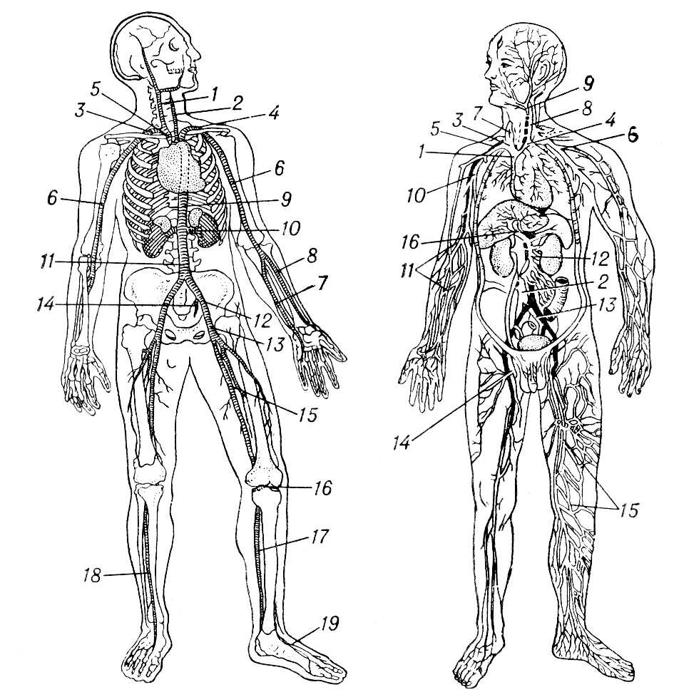
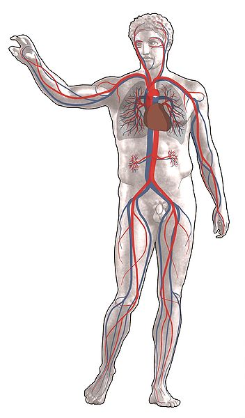
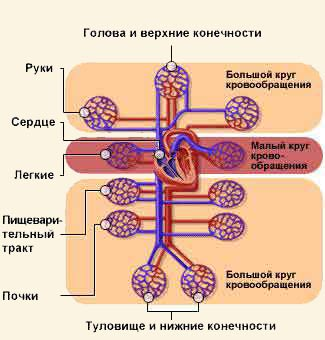
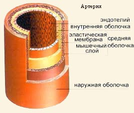
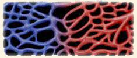
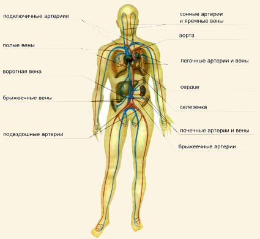
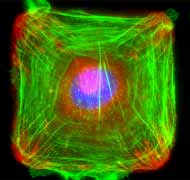

Кровеносная система
Значение слова "Кровеносная система" в Большой Советской Энциклопедии
Кровеносная система, в организме животных и человека система сосудов и полостей, по которым происходит циркуляция крови или гемолимфы. Посредством Кровеносная система клетки и ткани организма снабжаются питательными веществами и кислородом и освобождаются от продуктов обмена веществ. Поэтому Кровеносная система иногда называют транспортной, или распределительной, системой.
Различают два типа Кровеносная система: незамкнутую (лакунарную), свойственную большинству беспозвоночных (членистоногие, моллюски) и низшим хордовым животным (полухордовые и оболочники), и замкнутую, характерную для некоторых беспозвоночных (немертины, кольчатые черви), всех позвоночных животных и человека. У животных с незамкнутой Кровеносная система сосуды прерываются щелевидными пространствами (лакунами, синусами), не имеющими собственных стенок. Кровь (называемая в этом случае гемолимфой) вступает в непосредственное соприкосновение со всеми тканями тела. У животных с замкнутой Кровеносная система кровь движется по сосудам и обмен веществ между кровью и различными тканями организма совершается через стенки сосудов. Из замкнутой Кровеносная система (из венозной её части) у позвоночных животных в процессе эволюции выделилась лимфатическая система.
У человека, позвоночных животных, а также у некоторых беспозвоночных (членистоногие и моллюски) главный орган Кровеносная система — сердце. Сосуды, несущие кровь от сердца, называются артериями, а приносящие кровь к сердцу, — венами. В замкнутой Кровеносная система артерии распадаются на сосуды всё меньшего калибра и, наконец, переходят в артериолы, из которых кровь попадает в капилляры. Последние сливаются между собой в сложную сеть (см. Капиллярное кровообращение), из которой кровь поступает сначала в мелкие (венулы), а затем во всё более крупные вены. Внутренний слой стенок вен образует особые карманоподобные клапаны, направляющие ток крови в одну сторону. Средний слой стенок артерий содержит особенно много гладких мышц и эластичных волокон, что обусловливает способность артерий к пульсации.
Наиболее простое строение Кровеносная система у немертин — она состоит из 3 продольных сосудов: спинного и 2 боковых; по спинному сосуду кровь течёт в переднюю часть тела, по боковым — в заднюю. У кольчатых червей, помимо главных продольных сосудов (спинного и брюшного), имеются поперечные сосуды, от которых отходят ветви к кишечнику, параподиям и выделительным органам. У членистоногих, плеченогих и моллюсков Кровеносная система ещё более усложнена, что связано с появлением у них сердца, расположенного на спинной стороне тела (рис. 1). У некоторых членистоногих, особенно у трахейнодышащих, незамкнутая Кровеносная система упрощена, т. к. значительная часть дыхательной функции перешла от Кровеносная система к трахеям. У моллюсков наблюдаются все переходы от незамкнутой Кровеносная система к почти замкнутой (головоногие моллюски). Среди беспозвоночных животных только у моллюсков сердце разделено на желудочек и предсердия. Кровь, обогащенная в жабрах кислородом, поступает в предсердия; т. о., содержащаяся в сердце кровь — артериальная. У иглокожих слабо развитая Кровеносная система незамкнутого типа связана с системой лакун и синусов; у морских ежей и голотурий хорошо развиты кровеносные сосуды.
Наиболее сложно строение Кровеносная система у позвоночных животных и человека. Сердце у них имеет мощную мышечную стенку. В зависимости от наличия у позвоночных животных жаберного или лёгочного способа дыхания кровообращение осуществляется по одному или двум кругам. При жаберном типе дыхания (у круглоротых и рыб, кроме двоякодышащих) — один круг кровообращения. Сердце состоит из 2 основных отделов — предсердия и желудочка (двухкамерное), кроме того, в нём имеется венозный синус, а у большинства рыб ещё и артериальный конус; сердце заполнено венозной кровью. Из него выходит брюшная аорта, по которой венозная кровь поступает в приносящие жаберные артерии (рис. 2). В жабрах кровь обогащается кислородом, становится артериальной и поступает через выносящие жаберные артерии в спинную аорту, откуда разносится ко всем органам тела. Венозная кровь поступает в сердце по передним и задним кардинальным венам, которые у круглоротых впадают в венозный синус непосредственно, а у рыб —через кювьеровы протоки.
При лёгочном типе дыхания (у всех наземных позвоночных животных и человека, а также у двоякодышащих рыб) — два круга кровообращения: большой и малый. По большому кругу артериальная кровь из сердца направляется по артериям ко всем органам и тканям; пройдя через капиллярную сеть отдельных органов, кровь переходит в венозную систему, и по крупным венам поступает в сердце. По малому кругу венозная кровь из сердца по лёгочным артериям направляется в лёгкие; пройдя через капиллярную сеть лёгких, обогащенная кислородом кровь (артериальная) по лёгочным венам возвращается в сердце. В связи с наличием второго (малого) круга кровообращения строение сердца наземных позвоночных усложнилось: сердце вместо двухкамерного стало трёхкамерным (2 предсердия и 1 желудочек) у земноводных и четырёхкамерным (2 предсердия и 2 желудочка) у некоторых пресмыкающихся (крокодилы), у птиц, млекопитающих животных и человека (рис).
У большинства пресмыкающихся желудочек разделён неполной перегородкой, и поэтому сердце их имеет строение, промежуточное между трёх- и четырёхкамерным. В четырёхкамерном сердце артериальная кровь полностью отделена от венозной, вследствие чего ткани и органы снабжаются только артериальной кровью. В трёхкамерном сердце артериальная и венозная кровь смешивается в желудочке, и органы снабжаются смешанной кровью. У всех наземных позвоночных животных и человека в процессе их зародышевого развития претерпевают изменения сосуды, отходящие от брюшной аорты (соответствуют жаберным сосудам рыб; см. Артериальные дуги). У взрослых земноводных и пресмыкающихся имеются 2 дуги аорты — правая и левая; у птиц — только правая дуга аорты; у млекопитающих животных и человека — только левая. Для венозной системы всех наземных позвоночных животных и человека характерно наличие задней (нижней) полой вены, выполняющей функцию задних кардинальных вен, и 2 (реже 1) передних (верхних) полых вен, образующихся из кювьеровых протоков. У всех позвоночных имеется воротная система печени; воротная система почек хорошо развита у рыб, земноводных и пресмыкающихся, слабо — у птиц; у млекопитающих животных и человека она отсутствует.
Лит.: Шмальгаузен И. И., Основы сравнительной анатомии позвоночных животных, 4 изд., М., 1947; Беклемишев В. Н., Основы сравнительной анатомии беспозвоночных, 3 изд., т. 2, М., 1964.

Рис. — схема артериальной системы человека; артерии:
а
1 — правая общая сонная;
2 — левая общая сонная;
3 — правая подключичная;
4 — левая подключичная;
5 — безыменная;
6 — плечевая;
7 — локтевая;
8 — лучевая;
9 — грудная аорта;
10—почечная;
11 — брюшная аорта;
12 — общая подвздошная;
13 — наружная подвздошная;
14 — подчревная;
15 — бедренная;
16 — подколенная;
17 — задняя большеберцовая;
18 — передняя большеберцовая;
19 — тыльная стопы;
б
схема венозной системы человека; вены:
1 — верхняя полая;
2 — нижняя полая;
3 — правая безыменная;
4 — левая безыменная;
5 — правая подключичная;
6 — левая подключичная;
7 — правая внутренняя яремная;
8 — левая внутренняя яремная;
9 — общая лицевая;
10 — плечевая;
11 — кожные руки;
12 — верхняя брыжеечная;
13 — левая общая подвздошная;
14 — бедренная;
15 — кожные ноги;
16 — воротная печени.


Сердце, кровеносные сосуды и сама кровь образуют сложную сеть, по которой эти вещества переносятся в организме.
Говоря о системе кровообращения, необходимо помнить о лимфатической системе, которая берет плазму, перешедшую от капилляров к тканям, и возвращает ее в кровь, препятствуя затоплению тканей, так как оказывает дренажное действие.
Система кровообращения основана на работе сердца, перекачивающего кровь со скоростью 11 м/с, то есть 40 км/ч.). Сокращения сердечной мышцы создают в жидкости т.н. избыточное давление, иначе говоря, напряжение, превышающее давление воздуха, который окружает наше тело. Избыточное давление, названное в медицине артериальным, измеряется от условного нуля, в качестве которого как раз и выступает атмосферное давление. Каждую минуту спокойной работы сердце пропускает через себя 3,6 кг (около 3,6 л) крови, чтобы поддерживать это внутреннее напряжение. Оно максимально в момент сокращения - систолы, тогда как во время диастолы, расслабления миокарда, падает до нуля.
Кровоток - это сплошной поток плотностью 1,06 г/см3. Он протекает по сети кровеносных сосудов, которая включает в себя большие вены и артерии, многократно ветвящиеся и постепенно уменьшающиеся до размеров крохотных капилляров. Скорость кровотока задается интенсивностью сердцебиений, артериальным давлением и величиной просвета кровеносных сосудов. В артериях поддерживается скорость крови, равная 50 см/с, а в венах - 20 см/с. В капиллярах течение крови замедляется по причине их мелкого поперечного диаметра. Здесь скорость кровотока насчитывает максимум 2 мм/с, а пульсовые колебания гасятся. Равномерное движение жидкости создает оптимальные условия для обмена веществ в тканях.
Поскольку транспортные функции сосудистой системы несколько различаются, то это обусловливает и соответствующие различия в строении кровеносных сосудов. Крупные артерии и вены служат главным образом для переноса крови. Через стенки даже очень больших артерий постоянно протекает обмен веществ с окружающими тканями, но он очень слаб. Через тончайшие стенки капилляров легко просачиваются различные вещества, отчего в живых тканях происходит непрерывный обмен: кровь отдает клеткам организма вещества, поддерживающие жизнь, и вымывает продукты распада.
Общая протяженность всех сосудов нашего тела насчитывает порядка 100 тыс. км, а их площадь приближенно составляет 7000 м2, что равняется площади 10 футбольных полей. На каждый квадратный сантиметр мышечной ткани приходится от 3000 до 5000 капилляров и более. Из этих сосудов постоянно функционируют лишь 10%, остальные "отдыхают", являясь закрытыми. Они подключаются к работе лишь во время выполнения человеком движений, связанных с очень большими физическими нагрузками. Кровообращение закрытое, двойное и полное.
Закрытое, потому что не сообщается с внешней средой, как у насекомых; двойное, потому что имеет два круга; и полное, потому, что венозная и артериальная кровь никогда не смешиваются. Кровобращение образует два круга:
• Малый, или легочный круг. Расположен между сердцем и легкими. Кровь, насыщенная углекислым газом, доходит до легких и обогащается кислородом.
• Большой, или общий круг. Доставляет обогащенную кислородом кровь от сердца к разным органам и тканям тела и удаляет продукты обмена.
Кровеносные сосуды
Кровеночные сосуды переносят кровь между сердцем и различными тканями и органами тела.
Существуют следующие типы кровеносных сосудов:
• артерии
• артериолы
• капилляры
• венулы и вены
Артерии и артериолы несут кровь от сердца. Вены и венулы доставляют кровь обратно в сердце.

Артерии - это трубки, по которым циркулирует кровь, выходящая из сердца и идущая к различным органам. Артерии имеют большой диаметр и толстые эластичные стенки, выдерживающие очень высокое давление крови.
Артерии состоят из трех оболочек:
• Внутренняя оболочка, или интима. Образована эндотелиальной тканью, обеспечивает легкое протекание крови.
• Средняя оболочка, или медиа. Состоит из гладкомышечных волокон, прочных и эластичных, позволяет изменять просвет артерии.
• Наружная оболочка, или адвентиция. Соединительно-тканная внешняя оболочка.
Трубки системы кровообращения не являются жесткими, поэтому их просвет, регулируемый вегетативной нервной системой, увеличивается или уменьшается благодаря гладким мышцам, из которых они состоят, в зависимости от физиологических потребностей каждого органа или от температуры окружающей среды.
В органах и тканях артерии постепенно переходят в сосуды меньшего просвета, превращаясь в капилляры.
Капилляры - это самые мелкие кровеносные сосуды (диаметром с волос), которые соединяют артериолы с венулами. Именно в капиллярах, благодаря их очень тонкой стенке состоящей только из одного слоя эпителиальных клеток, происходит обмен питательными и другими веществами (такими, как кислород и углекислый газ) между кровью и клетками различных тканей. В этом месте артериальные капилляры превращаются в венозные, а затем - в вены с большим просветом, вплоть до полых вен.
В зависимости от потребности в кислороде и других питательных веществах разные ткани имеют разное количество капилляров. Такие ткани, как мышцы, потребляют большое количество кислорода, и поэтому имеют густую сеть капилляров. С другой стороны, ткани с медленным обменом веществ (такие, как эпидермис и роговица) вообще не имеют капилляров. Тело человека имеет очень много капилляров: если бы их можно было расплести и вытянуть в одну линию, то ее длина составила бы от 40 000 до 100 000 км!

Капилляры постепенно превращаются в трубки с большим просветом - вены, которые переносят кровь от различных органов к предсердиям. Их структура сходна со строением артерий, они также состоят из трех тканевых оболочек, но средняя оболочка более тонкая, поэтому вены более мягкие и хрупкие и менее эластичные. Большие вены имеют внутри маленькие клапаны, регулирующие направление тока крови и препятствующие ее обратному ходу. Единственные вены, несущие артериальную кровь к сердцу, - это легочные; они берут начало в легких и, следовательно, транспортируют кровь, обогащенную кислородом. Остальные вены идут параллельно артериям и несут венозную кровь.
От сердца отходят две артерии: легочная артерия и аорта.
Легочные артерии и вены - сообщают сердце с легкими, участвуют в процессе обогащения крови кислородом.
Аорта - наиболее крупная артерия организма. Разветвляясь, кровоснабжает все органы и ткани.
Брыжеечные артерии - делятся на верхнюю и нижнюю. Начинаются у аорты и кровоснабжают желудочно-кишечный тракт.
Венечные артерии, берущие начало у восходящей аорты, располагаются в виде кольца вокруг сердечных борозд, кровоснабжая мышцу сердца во время диастолы.
Подключичные артерии - две артерии с многочисленными ответвлениями, кровоснабжающие верхние конечности.
Селезенка - орган - «кладбище эритроцитов». Функционирует как депо крови.
Сонные артерии и яремные вены - кровоснабжают головной мозг.
Подвздошные артерии - являются продолжением аорты при ее раздвоении. Кровоснабжают каждая нижнюю конечность.
Почечные артерии и вены - кровоснабжают почки.
Верхняя полая вена и нижняя полая вена, впадают в сердце.
Воротная вена - вена, переносящая кровь от кишок и селезенки к печени.
Брыжеечные вены - верхняя и нижняя, несут кровь от кишечника и впадают в воротную вену.

Емкость кровеносной системы (артерий, вен, капилляров) значительно больше общего объема крови в организме. Кровь не заполняет кровеносную систему до краев, а с большим или меньшим постоянством находится лишь в какой-то части организма, оставляя значительную долю сосудистой системы "пустой". Дело в том, что протяженность кровеносной системы человека может доходить до 100 000 километров и, по подсчетам А.Карреля, для ее заполнения требуется 200 000 литров, т.е. по 2 литра крови на один километр, тогда как наш организм располагает лишь 5-7 литрами. Грубо говоря, кровеносная система человека заполнена на 1/40 000 ее потенциального объема.
В неполноте системы есть свой резон: если существуют обстоятельства, требующие особого притока крови к органам, то оттекать ей тоже куда-то надо, нужны пустоты для возможного отступления. Постоянно кровь курсирует лишь в треугольнике: легкие - сердце - печень. Если же судить по размерам сосудов, то можно представить себе географию мест, посещаемых кровью с большим или меньшим постоянством - калибр артерий и вен органов находится в прямой зависимости от функционального назначения органов. Такие органы, как почка, железы внутренней секреции, несмотря на сравнительно малые размеры, снабжаются крупными артериями, так как отличаются интенсивной функцией. То же относится к некоторым группам мышц."
Интенсивный приток крови к другим органам можно вызвать искусственно: пообедав, можно пригнать кровь к желудку, охлаждением поверхности тела, или наоборот, нагреванием в бане можно усилить кровоток в кожных покровах и т.д. Однако не все органы поддаются столь прямой провокации и, судя по размерам сосудов, не все они снабжаются кровью постоянно и автоматически. Рассуждая чисто логически, и зная, что объем крови всегда значительно меньше объема кровеносной системы, естественным было бы предположить, что меньше всего крови поступает в органы и отделы, находящиеся в наибольшем отдалении от сердца, на периферии. Проще говоря, прежде всего страдает от недостатка крови то, что снабжается капиллярами.
Отдаленность от сердца не единственная проблема капиллярного кровоснабжения. Между артериями и капиллярами находятся артериолы, "краны кровеносной системы", вольные пускать или не пускать в капилляры кровь. То есть, мало того, что крови трудно попасть в капилляры в силу отдаленности их от насосной станции, но вообще не могут попасть туда без специального разрешения, приказа, отданного организмом.

У капилляров мозга артеориол нет, но существует своя, нейрогуморальная система регуляции кровотока. Кстати, именно поэтому простым йоговским стоянием на голове достичь самотека, а вместе с ним решения проблем кровоснабжения мозга, невозможно. Капиллярная система мозга отличается чрезвычайной разветвленностью. Причем, чем важнее участок мозга, тем сильнее ветвление. Например, в 1 куб. мм. белого вещества мозга содержится только 220 капилляров, тогда как в одном куб. мм. серого - 1000.Чрезвычайно густы капиллярные сети гипоталамуса и гипофиза. Тот отдел гипофиза, который отвечает за выработку очень важного гормона радости - эндорфина - не снабжен нервными окончаниями (они останавливаются как раз на границе этой области гипофиза), но одновременно именно с этой границы начинает бурно ветвится капиллярная сеть гипофиза (т.е. стимулировать выработку эндорфина по нейронной сети невозможно, это можно сделать только через капиллярную систему кровоснабжения). Обобщая сказанное, остается констатировать, что вопрос о нормальном питании важнейших отделов головного мозга - вопрос капиллярный.
Что такое «измерить давление»?
Наверное, не однажды вам приходилось «измерять давление». Давление, или кровяное давление, - это давление, которое оказывает кровь на стенки кровеносных сосудов и которое зависит от силы, с которой сердце качает кровь, а также от степени эластичности сосудов. Берутся два показателя: максимальное давление, соответствующее моменту систолы сердца, и минимальное, соответствующее диастоле. Говорят, что человек - гипертоник, если у него систолическое давление превышает 160 мм ртутного столба, а диастолическое - 95 мм. Тогда человек может быть подвержен большому риску коронарных заболеваний.

(с) Мед. справочник., Регент.

(с) Библиотека о настоящих Вампирах
realvampires.do.am
[Наверх]